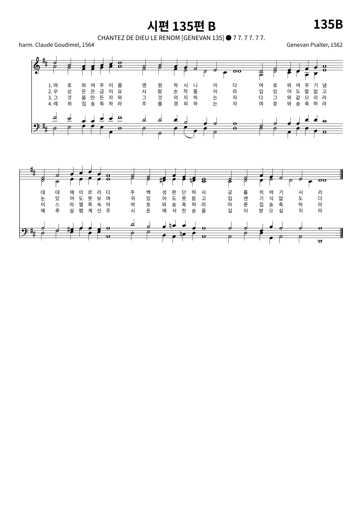

Psalm 135B
CHANTEZ DE DIEU LE RENOM [GENEVAN 135] · 7 7. 7 7. 7 7.
English title: Hallelujah! Praise the LORD
Tune: Genevan Psalter, 1562 · Harmony: Claude Goudimel, 1564 · Lyrics: Korean adaptation of Psalm 135 from the Korean Revised Version (AI draft adaptation · not yet theologically reviewed) · 4 stanzas
Psalm 135 is divided into 2 tunes: A B · This tune contains stanzas 7–10 of the Psalm 135 lyrics.
Score PDF MusicXML (for printing) MusicXML (for accompaniment, with prelude and repeats) Read Psalm 135 (Korean Revised Version)
Score
← Psalm 135A ListAccompaniment (in preparation)Psalm 136A →
Lyrics (Korean)
Stanza 1
여호와여 주 이름
영원하시니이다
여호와여 주 기념
대대에 이르리다
주 백성 판단하사
긍휼히 여기시리
여호와여 주 이름
영원하시니이다
여호와여 주 기념
대대에 이르리다
주 백성 판단하사
긍휼히 여기시리
Stanza 2
우상은 은금이요
사람 손 작품이라
입 있어도 말 없고
눈 있어도 못 보며
귀 있어도 못 듣고
입엔 기식 없도다
우상은 은금이요
사람 손 작품이라
입 있어도 말 없고
눈 있어도 못 보며
귀 있어도 못 듣고
입엔 기식 없도다
Stanza 3
그것을 만든 자와
그것 의지하는 자
다 그와 같으리라
이스라엘 족속아
여호와 송축하라
아론 집 송축하라
그것을 만든 자와
그것 의지하는 자
다 그와 같으리라
이스라엘 족속아
여호와 송축하라
아론 집 송축하라
Stanza 4
레위 집 송축하라
주를 경외하는 자
여호와 송축하라
예루살렘 계신 주
시온에서 찬송을
길이 받으실지라
레위 집 송축하라
주를 경외하는 자
여호와 송축하라
예루살렘 계신 주
시온에서 찬송을
길이 받으실지라